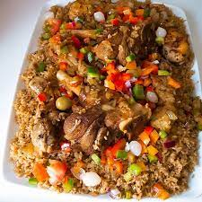

TCHEP SENEGALAIS

Description
Le plat de tchep est un mets que l'on retrouve dans les pays d'Afriques de l'ouest precisement au Senegal.
Au Senegal c'est un plat tres appréciés.
les ingredients pour realiser ce plat delicieux sont :
- 1 kg poissons frais (Barracuda, dorade, tilapia, etc)
- 1 kg de riz parfumé cassé (le riz siam)
- 6 gousses d'ail
- 1 petit bouquet de persil
- Piments, selon votre goût
- 1 poivron
- Légumes aux choix (Citrouille, Aubergine, Choux, Carotte, Manioc, aubergine blanc)
- 2 tomates fraiches
- 1 oignon
- Sel, selon votre goût
- Une Feuille de laurier
- Quelques gombos et des feuilles d'oseille
- Cube de bouillon (Bio, fait-maison ou selon votre goût)
- 200 ml d huile pour le riz
Etapes de preparation
.
- Piler ensemble les gousses d'ail, les piments, le poivron et le persil.
- Bien piler le mélange et diviser le en 2, sur une partie mettre un peu de sel, du poivre noir, le cube fait maison.
- Faire des petits trous sur les poissons et introduire ce mélange dans les petits trous comme farce.
- Chauffer l'huile et faire frire les morceaux de poisson, retirer et réserver.
- Couper l'oignon et ajouter dans l'huile chaude, faire sauter jusqu'à ce qu'il devienne tendre.
- Ajouter la tomate concentrée, les tomates fraîches écrasées et laisser cuire une quinzaine de minutes en remuant occasionnellement.
- Ajouter la feuille de laurier, le reste du melange de persil, un peu de poivre noir, un peu de cube fait maison et faire sauter quelques minutes.
- Ensuite mettre les légumes de votre choix (citrouille, carotte, choux, aubergines, manioc, gombo, le piment et l'aubergine), les morceaux de poisson frit et couvrir de 2 litre d'eau.
- Laisser les légumes cuire complètement; Après cuisson retirer tous les légumes et les poissons.
- Laver le riz plusieurs fois et le faire cuire à la vapeur une quinzaine de minutes sur une marmite à la vapeur. Retirer et mettre de côté.
- Retirer une louche de la soupe et garder pour la sauce d'oseille.
- Puis mettre le riz dans la soupe, ajouter du sel et du cube à votre goût.
- Réduire le feu et laisser le riz cuire complètement à feu doux.
- Dans une petite marmite, faire cuire les gombos et les feuilles d'oseille avec un peu d'eau.
- Pilez le tout ensemble (gombo et oseille) puis mettez la soupe que vous avez réservée avec un peu de sel; retirer et mettre de côté.
Servir le riz avec les légumes, le poisson et la sauce d'oseille.
Bon appetit!
Retour au menu principale